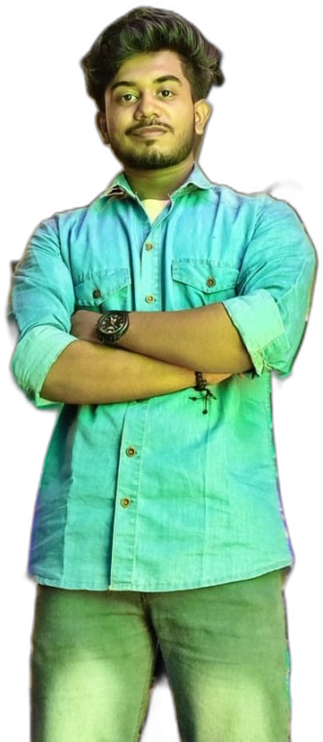

The one man army
Solutions Architect · AI & Automation Enthusiast · Building real-world digital solutions.
I build software, AI tools and automation systems that solve real problems. I like turning an idea into a working product, learning new technology by building with it, and finishing the details: a score that updates without a reload, an answer that cites its source, a login that holds up.
My interests run across AI, automation, web development and IoT. On GitHub I describe myself as an AI Engineer and Full-Stack Developer. Always curious, always learning, always building.

Burdwan, IndiaHands-on work
Full-Stack Web Developer
Self-employed, freelance · Jun 2025 to present · India, remote
Education
The method
Mockups first
You see the design and pick before anything is built.
Ship in batches
Changes go live together, so each release is tested as a whole.
Test on real devices
Phone and laptop layouts are checked after every change.
Free tiers first
Vercel, Render and Supabase keep early projects at $0.
What I use
Build
AI & automation
Recon & secure
Out there
NEOpreneur
Presented venture ideas at The Neotia University, at an event supported by the IIM Calcutta Innovation Park.
National Space Day Quiz 2026
Participation certificate. Space and technology are a standing interest.
From repo history
Have something
to build?
Tell me what you need. I reply by email.